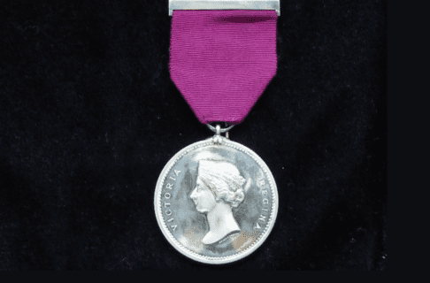
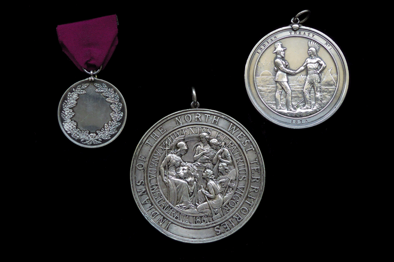

条约勋章：承诺的象征
在签署编号条约时，政府向原住民酋长分发了特制的银制勋章。这些勋章不仅是装饰品，更是双方建立盟友关系的法律和外交证明。

著名的《第一条约》握手纪念章
视觉元素深度解析
- 双人握手： 代表官方代表与原住民领袖之间的平等地位与和平共处。
- 背景符号： 画面中的太阳、草地和帐篷代表了土地，寓意条约涵盖了这片土地上的资源共享。
- 永恒誓言： 原住民理解这些符号意味着协议将持续“只要太阳升起，河水流淌”。
勋章的历史演变
最初在1871年，政府提供的勋章非常小，被当时的酋长们认为缺乏诚意。直到1873年，政府才重新委托制作了现在这种直径达76毫米的大型纯银勋章。
专业背景：身份的象征
对于原住民首领来说，佩戴勋章是权力的象征，也是在外交场合展示身份的方式。勋章的纯度非常重要，因为“银”在当时被视为诚实的金属，代表了王室承诺的纯洁性。
勋章的文化意义
这些勋章不仅是外交工具，更是文化遗产的象征。它们代表了原住民与政府之间的关系，以及对土地和资源共享的承诺。

1871年最初的小型勋章

1872年镀银大型勋章

1873年著名的握手勋章
这些勋章在今天依然被原住民家庭珍藏，作为那段重要历史的见证。它们提醒着每一个人，条约是建立在相互尊重和共同生存的基础之上的。
著名的《第一条约》握手纪念章